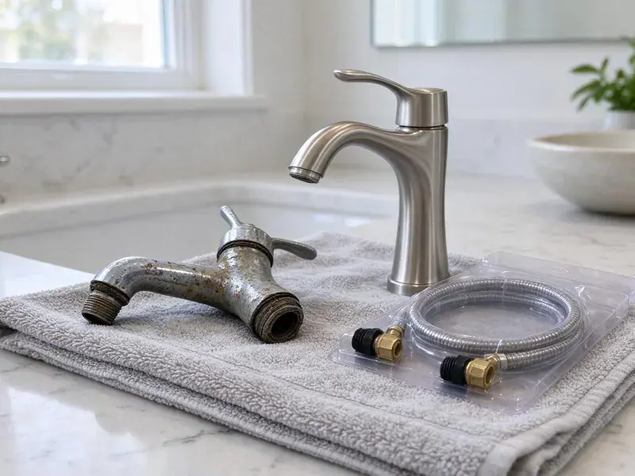

Well Pump Replacement in Boca Raton, FL
HDF Plumbing handles well pump replacement throughout Boca Raton, FL, from shallow jet wells to deep submersibles.
- Same-Day Well Pump Service
- Megger Testing Before We Pull
- No-Water Emergency Calls
- Labor Guarantee

Get Your Water Back. Well Pump Replacement in Boca Raton, FL.
We carry common pump sizes and controls, so most jobs finish in one day.
Well Pump Replacement in Boca Raton, FL
HDF Plumbing diagnoses before it replaces. The switch, control box, wiring and tank all get tested first, so we know the pump is actually at fault. It saves a lot of pump pulls.
Our expertise includes:
- Constant pressure VFD systems for steady flow
- Submersible pump pulling and setting with a pump hoist
- Pressure Tank Precharge Setup

Additional Plumbing Replacement Services in Boca Raton, FL
When repairs are no longer enough, our replacement services in Boca Raton, FL deliver durable upgrades that restore full performance.


Customers
Why Choose HDF Plumbing for Well Pump Replacement in Boca Raton, FL?
Pulling a pump from 300 feet takes a powered hoist and two people, and dropping one down the casing can cost more than the pump itself. That is not a place to rush. Pick the wrong size and it short cycles or runs dry.
- Code Compliance, Wiring and plumbing meet local Boca Raton and Florida code on every install.
- Test First, We check the switch, control box and motor before we recommend pulling anything.
- Steady Pressure, A correctly sized pump and tank hold steady pressure at every faucet.
Citywide Coverage
Every corner of Boca Raton and the rural roads around it are in our service area for well pump work and pressure tank work. Gravel lanes are fine. The hoist truck can handle rough access.
Experienced Team
Each tech at HDF Plumbing carries a megohmmeter and an amp clamp, and uses both before recommending a new pump to anyone. You get numbers, not guesses. We share them with you.
Safety-First Approach
Grounding the pump motor back to the panel is required by code and it protects anyone who touches a faucet or the well casing. We check it on every job. We follow local and state rules as written.
Trusted Certified Boca Raton Plumbing Services Professionals
At HDF Plumbing, we are proud to offer certified plumbing services throughout Boca Raton, FL. Those papers on the wall mean something. Every repair, install and maintenance visit follows strict safety and quality rules, and the plumbers doing the work carry recognized industry credentials.
Call Us Now PHCC Plumbing Contractor Recognition
PHCC Plumbing Contractor Recognition Better Business Bureau (BBB) Accreditation
Better Business Bureau (BBB) Accreditation Angi Certified Pro
Angi Certified Pro ISO 9001 Quality Management Certification
ISO 9001 Quality Management CertificationSubmersible and Jet Pump Work in Boca Raton, FL
Franklin Electric Well Pump Replacement in Boca Raton
Franklin Electric builds a large share of the submersible motors sold in the US, including ones sitting under other brands' pump ends. Replacement control boxes are easy to source. We match the motor to the pump end and the wire size to the run length.

Well Pump Brands We Install in Boca Raton, FL
Goulds, Grundfos, Franklin Electric and Sta-Rite cover nearly every well pump we install. We pick by the well, not the logo. Parts for Goulds and Franklin are easy to get, which matters when a control box dies on a weekend.
Jet Pump Replacement in Boca Raton, FL
Jet pumps sit above ground, in a well house or basement, and pull water up by suction from wells where the water level is within about 25 feet. Deep-well jets with a two-pipe setup can reach further, but they work harder. The common failure is losing prime. Most of the time a bad foot valve or a suction leak is letting water drain back, and we check those before condemning the pump.
No-Water Calls in Boca Raton
Pump trouble rarely gives notice. Usually the faucet spits air, then quits, after the motor has been limping along for weeks. Before we pull the pump, we test the switch and control box.
Well Pump Efficiency Upgrades in Boca Raton, FL
Older 1 HP pumps running against a 60 psi switch use more power than most people expect, especially on a well with a long horizontal run to the house. A correctly sized pump, or a variable-speed drive, can cut the run time. The math does not always work. We run the numbers with you.
Control Box and Pressure Switch Replacement in Boca Raton, FL
Not every dry faucet means a dead pump. Pressure switches with burned contacts or a clogged pickup tube can leave the pump sitting idle while the tank drains to zero. A new switch runs about $30 in parts. We show you the burned contacts.
Emergency Well Pump Service in Boca Raton, FL
Lost water at the house? Call (904) 925-7356 and tell us what the pressure gauge reads. Zero with the pump running points one way, zero with the pump silent points another, and that tells us which parts to load. We try to restore water the same day.

Solar Well Pump Systems in Boca Raton, FL
Solar well pumps make sense for livestock tanks and cabins where running power from the meter would cost more than the pump itself. A few panels feed a DC pump through a controller while the sun is up. You store water, not electricity. We size panels to your daily gallons.
Well Pump Service Near You in Boca Raton, FL
Most well pump companies near Boca Raton, FL can sell you a pump, but fewer own a pump hoist that can pull 300 feet of pipe without a crane. Our trucks carry one. That keeps the job to one visit.
A dry house gets the next available crew. HDF Plumbing serves Boca Raton and the rural areas around it, and we keep after-hours coverage for households where the well is the only source of water. That includes weekends and holidays.
HDF Plumbing at a Glance
- Fully licensed plumbing team covering Boca Raton, FL
- 24/7 emergency service with same-day scheduling
- Upfront, flat-rate pricing before work begins
- 4.9-star rated by 739+ Florida customers
Boca Raton Map
Boca Raton Information
- Population
- 99,974
- Area codes
- 561/754/954
- Service area
- Boca Raton and communities within 40 miles
- Nearby
- Deerfield Beach, Delray Beach, Coconut Creek, Pompano Beach
Well depth and shifting water levels decide which pump fits on homes in Boca Raton, FL.
Expert Services
Reach out to HDF Plumbing for reliable plumbing work done by licensed pros in Boca Raton, FL.
Our Specialized Plumbing Services in Boca Raton, FL
At HDF Plumbing, we handle the full list of plumbing services across Boca Raton, FL. We go from leak detection all the way to full system installations, for homes and commercial buildings, and we do it quickly at a fair price. Explore our core services below:


Our Well Pump Process in Boca Raton, FL
HDF Plumbing keeps the process simple, from the first test to the final pressure check.
Call Us
Call (904) 925-7356 and tell us about your well. We set a time for testing.
Test the Controls
We test the switch, wiring and tank. Then we confirm if the pump needs replacing.
Pull and Replace
We pull the old pump and set the new one with new wire and pipe as needed. We test pressure and flow before leaving.
Frequently Asked Questions About Well Pump Replacement in Boca Raton
Plan on $1,500 to $3,500 for a typical residential job. A deep well or a bigger pump pushes the price up, and so does a new tank or wire. We quote after testing.
Shallow well pumps, usually jet pumps, sit above ground and pull water by suction from about 25 feet or less. Submersibles go down in the water and push it to the surface. Suction cannot lift much past 25 feet.
Grundfos, Goulds and Franklin Electric. All three are widely supported.
Our usual picks are Franklin and Grundfos for submersibles, Goulds for jet pumps, and Zoeller for some shallow well work. Matching your current brand is usually easy. Budget matters too.
Yes. A pump that loses water over the intake runs dry and overheats. We can lower the pump or add dry-run protection.
If the tank is old or waterlogged, replace it with the pump. Short cycling from a dead tank is one of the top reasons a submersible motor dies young.
Yes, alone or with a pump. Since a bad bladder will short cycle a new pump, we check the tank air charge on every well visit. Tank swaps take about two hours.
Goulds, Grundfos, Franklin Electric and Sta-Rite, mostly. We pick based on depth and water quality, and on whether you want a constant pressure drive. All four have parts on supply house shelves.
What People Are Saying About Our Plumbing Experts?

Mark T.
The floor drain in our office break room backed up every few weeks. The plumber ran a cable, then put a camera down and found roots at a joint about thirty feet out. Seeing it on the screen made the decision easy.
Drain Cleaning · Margate, FL
Laura S.
Our 40 gallon tank started leaking from the bottom after thirteen years. The tech hauled the old one out, set a new unit with a fresh expansion tank, and had hot water running in about four hours. He took the old tank with him too.
Water Heater Replacement · Deerfield Beach, FL
Lisa C.
Water was pouring out from under the washing machine on a holiday weekend. HDF Plumbing talked me through closing the valves over the phone and had a plumber at the house within ninety minutes. It was a burst fill hose.
Emergency Plumbing · Pompano Beach, FL
Patricia H.
We had a slab leak that two other companies could not find. HDF Plumbing located it in under an hour with a listening device. They rerouted the line through the attic instead of breaking up the floor, so we kept our kitchen tile.
Slab Leak Repair · Pompano Beach, FLPaul B.
Our pit pump ran nonstop even in dry weather. The plumber found the check valve was stuck open, so the same water kept cycling back into the pit. New valve, new float switch, done in an hour. It runs quiet now.
Sump Pump · Boynton Beach, FLDiane F.
My kitchen faucet had dripped for months and I finally got tired of hearing it at night. HDF Plumbing came out the next morning, replaced the cartridge and the O rings, and tightened a loose base that was letting water under the sink.
Faucet Repair · Boca Raton, FL